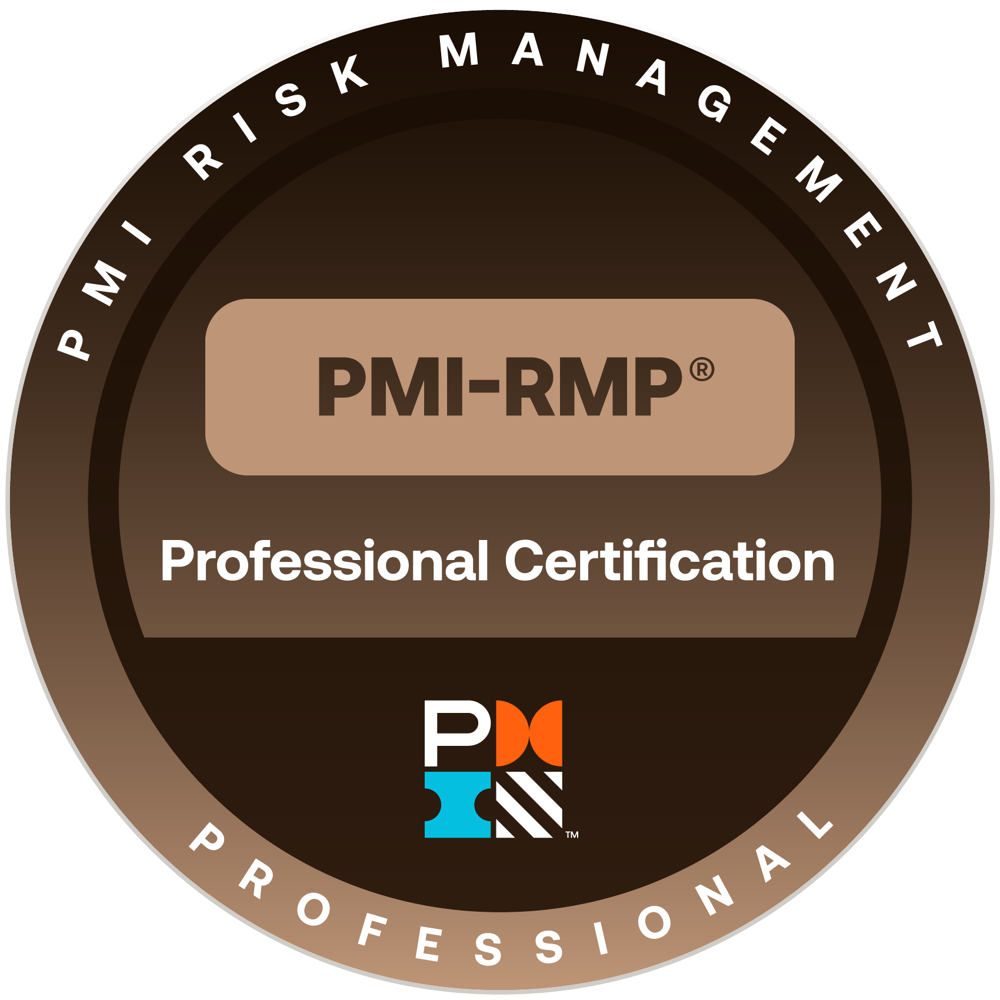
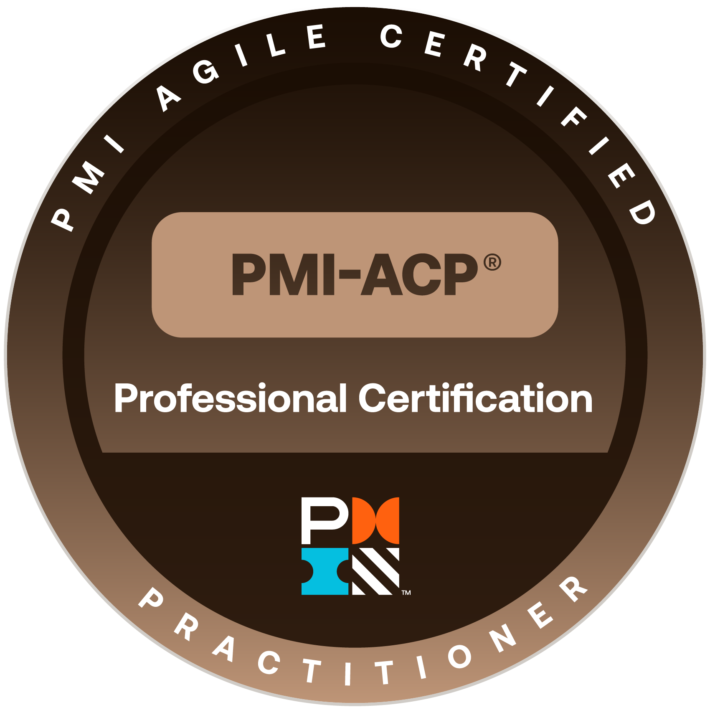
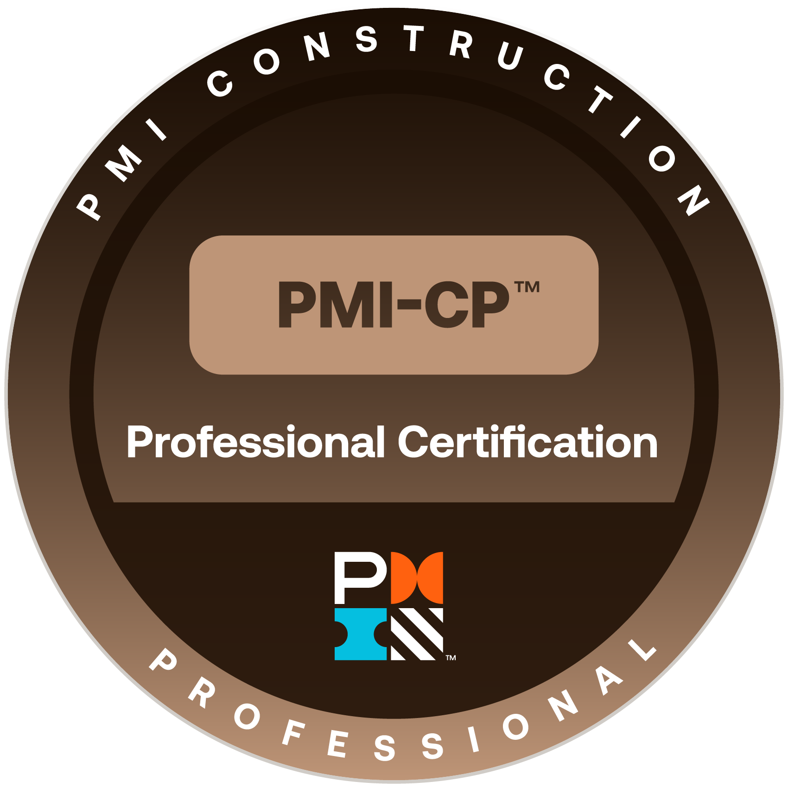
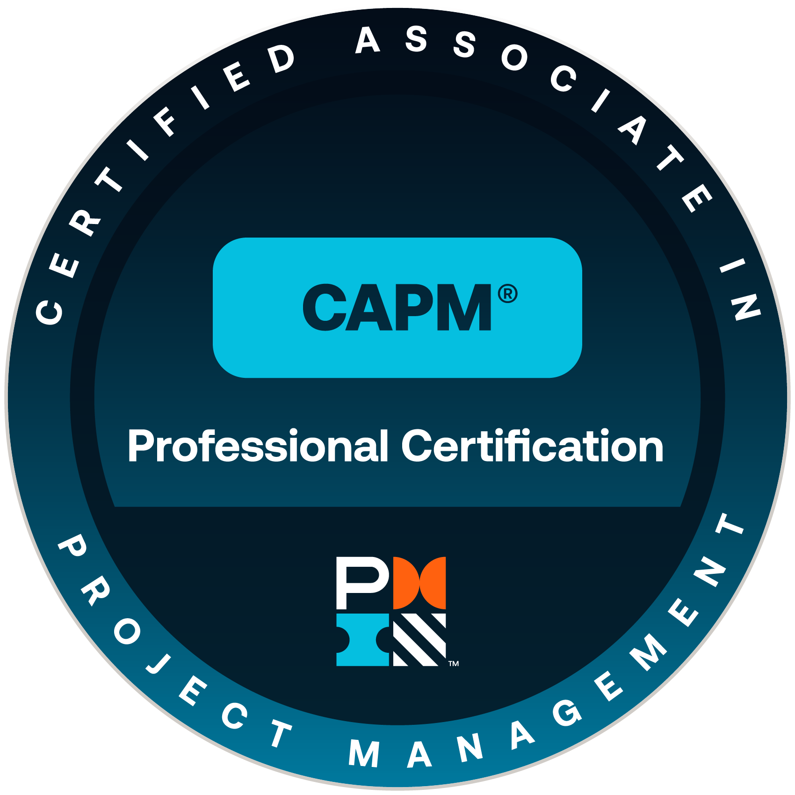
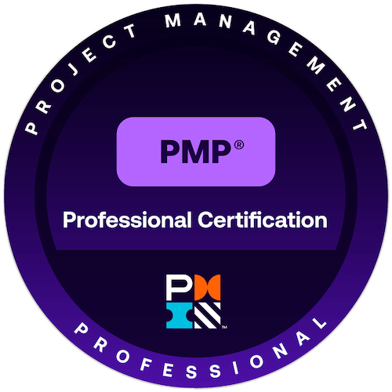
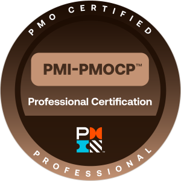

معاينة تصميم فقط (ليست الموقع النهائي). النصوص بين أقواس مربعة نائبة بانتظار صاحب الموقع.
شريك تدريب معتمد · Authorized Training Partner (ATP) of PMI®
منصة التدريب الرائدة في الشهادات الدولية لإدارة المشاريعLeading Training Platform for International Project Management Certifications
تجربة تعليمية متكاملة ومبتكرة واحترافية في إدارة المشاريع، معتمدة على معايير PMI.






6دورات تدريبية بشهادات PMI
2متاحة الآن للحجز
ATPشريك تدريب معتمد من PMI
PMP®CAPM®PMI-RMP®PMI-ACP®PMI-CP™PMI-PMOCP™PMP®CAPM®PMI-RMP®PMI-ACP®PMI-CP™PMI-PMOCP™
اختر شهادتك
الدورات التدريبية
اسحب الحلقة أو انقر على أي شهادة لتتعرف عليها.
مسارات التعلم
أقسام الدورات
لماذا تختارنا؟
تعلّم ذكي وفعّال بأعلى جودة
تجربة تعليمية متكاملة، مبتكرة واحترافية في إدارة المشاريع، معتمدة على معايير PMI، لتضمن لك التعلّم الذكي والفعّال بأعلى جودة.
01
منصة متكاملة
نظام إدارة التعلم الخاص بنا يغطي جميع احتياجات التدريب، بدون الحاجة لمصادر خارجية، مع أدوات عملية وواجهة سهلة الاستخدام.
02
محاكاة الامتحان الدولي
اختبر نفسك باستخدام أسئلة محاكية تمامًا لأسئلة امتحانات PMI، لتعزز فرصك في النجاح بثقة واحتراف.
03
خطة دراسة متكاملة
نقدم منهجية منظمة وواضحة خطوة بخطوة، لضمان تحقيق أهدافك التدريبية والتأهيل لشهادة PMP أو أي شهادة PMI أخرى.
04
قيمة حقيقية للمتدربين
محتوى شامل يشمل فيديوهات مسجلة، ملفات تعليمية وخرائط ذهنية، وأداة ذكاء اصطناعي لمساعدتك في تطوير مشاريعك.
ما تحصل عليه
ما تحصل عليه مع منصتنا
فيديوهات مسجلة
لكل المنهج بجودة عالية
ملفات تعليمية
مواد مرجعية شاملة
خرائط ذهنية
لتسهيل الفهم والحفظ
نماذج وقوالب
لتطبيق ما تعلمته على مشاريعك الواقعية
مدرب خبير
معتمد بـ 6 شهادات PMI دولية
👤
المدرب
م. أحمد الديب
مهندس مدني، متخصص في الرقابة والتدقيق على المشاريع وإدارة المخاطر والحوكمة، مدرب ضمن منظومة PMI Authorized Training Partner.
الرقابة والتدقيق على المشاريعإدارة المخاطرالحوكمة
تعرّف على المدرب
01
OUR VISION
رؤيتنا
Visionأن نصبح روادًا للتميز في التدريب الاحترافي محليًا وإقليميًا، من خلال محتوى مبتكر يواكب التطور، ويعزز الكفاءة المهنية، ويحقق أثرًا إيجابيًا مستدامًا في المجتمع والاقتصاد.
02
OUR MISSION
رسالتنا
Missionتقديم تدريب احترافي معتمد دوليًا في إدارة المشاريع والتخصصات المرتبطة بها، يجمع بين الجودة والابتكار والتطبيق العملي، ويسهم في تطوير قدرات الأفراد والمؤسسات في ليبيا والعالم العربي، وإعداد كفاءات قادرة على قيادة التغيير وتحقيق التميز المستدام.
03 · STRATEGIC OBJECTIVES
أهدافنا الاستراتيجية
Strategic Objectives
01التميز والاعتماد الدولي
برامج تدريبية وفق المعايير وأفضل الممارسات الدولية.
02النمو والتوسع
تعزيز حضورنا في ليبيا والتوسع في الأسواق العربية.
03التحول الرقمي
تطوير منصات تعليمية تفاعلية وأتمتة الخدمات.
04تنمية الكفاءات
تأهيل الكوادر وتطوير المهارات المهنية.
05الشراكات الاستراتيجية
بناء علاقات تعاون مهنية وأكاديمية.
06المسؤولية المجتمعية
إتاحة فرص التعلم والتطوير لمختلف فئات المجتمع.
07الاستدامة والابتكار
تنويع الخدمات ومصادر الإيرادات لضمان النمو والاستمرارية.
Lighting the way for the project profession since 1969
معهد إدارة المشاريع PMI
منذ عام 1969، يشكل معهد إدارة المشاريع (PMI) السلطة الرائدة عالميًا في مجال إدارة المشاريع، ملتزمًا بتوجيه الطريق نحو نجاح المشاريع وتسليط الضوء على قوة إدارة المشاريع والأشخاص الذين يقفون خلفها.
تاريخ PMI
منذ التأسيس
منذ تأسيسه، ركز PMI على جمع المهنيين معًا وتعريف وتطوير مهنة إدارة المشاريع بشكل مستمر. بدأت الفكرة بعد سلسلة من النقاشات بين جيم سنيدر وزملائه، وأسفرت عن اجتماع رسمي في معهد جورجيا للتكنولوجيا، أتلانتا، الولايات المتحدة الأمريكية في 3 أكتوبر 1969، حيث وُلد معهد PMI. وتم توقيع أوراق التأسيس في بنسلفانيا من قبل خمسة مؤسسين رسميين.
المؤسسون الخمسة
JS
James R. Snyder
المؤسس والمدير التنفيذي الأول، يُلقب بـ «أب PMI»
EJ
Eric Jenett, PMP
أول حاصل على شهادة PMP®، مؤسس مشارك
JD
J. Gordon Davis, PhD
بناء الأسس الأكاديمية لمهنة إدارة المشاريع
SG
Susan C. Gallagher
إدارة أولى الأنشطة المالية والفنية
EE
E.A. "Ned" Engman
تطبيق مبادئ إدارة المشاريع في قطاع الصناعة
مراحل التطور
مراحل تطور PMI عبر العقود
رسالتنا
نحن مجتمع يبتكر المنتجات والخدمات والخبرات التي تعزز نجاح المشاريع.
رؤيتنا
عالم تحقق فيه كل المشاريع أقصى إمكاناتها لتحقيق أثر إيجابي.
قيمنا وأهدافنا
تعظيم نجاح المشاريع بتعريف موحّد يمكن للجميع الاتفاق عليه، وإحداث أثر اجتماعي بتشجيع المهنيين على استخدام مهاراتهم لتحقيق فرق إيجابي في المجتمع.
شهادات PMI
الشهادات المعتمدة عالميًا
للمزيد من التفاصيل زر الموقع الرسمي pmi.org
Core Certifications – الشهادات الأساسية
Specialized Certifications – الشهادات المتخصصة
المدونة
قريبًا
[المقالات تُضاف لاحقًا من ملفات نصية بسيطة]
لا يشترط وجود خبرة عملية
مساعد معتمد في إدارة المشاريع (CAPM)®Certified Associate in Project Management (CAPM)®
أثبت للعالم أنك تمتلك المعارف والمهارات الأساسية التي تتطلبها فرق المشاريع. تثبت شهادة CAPM أنك مستعد للمشاركة في إدارة مجموعة واسعة من المشاريع، من خلال إتقان أساليب العمل التي تشمل:
إدارة المشاريع التنبؤيةPredictive Project Management
المبادئ والممارسات الرشيقةAgile Principles
تحليل الأعمالBusiness Analysis
PMI exam fees
رسوم الاختبار
نوع الرسومالقيمة
سعر الأعضاء(Member Price)158 دولاراً
السعر الكامل(Full Price)210 دولارات
ملاحظة: لا يُطلب دفع رسوم الاختبار إلا بعد قبول طلب التقديم، وعندما تصبح مستعداً لحجز موعد الاختبار.
هل شهادة CAPM مناسبة لك؟
تُصنّف شهادة CAPM في المرتبة الأولى ضمن قائمة «أكثر 9 شهادات مهنية طلباً» وفقاً لمؤسسة Entrepreneur Media, Inc.
يمكن أن يساعدك الحصول على شهادة CAPM في تطوير مسارك المهني من خلال:
✓
زيادة فرص التقدم الوظيفي.
✓
تعزيز إمكانية الحصول على دخل أعلى.
✓
بناء أساس مهني متين يؤهلك للحصول على شهادات احترافية أخرى ذات قيمة عالمية.
المسارات الوظيفية المحتملة لحاملي شهادة CAPM
يمكن أن تؤهلك شهادة CAPM للعمل في مجموعة متنوعة من الوظائف المرتبطة بإدارة المشاريع، ومنها:
مساعد مدير مشروعAssistant Project Manager
مسؤول إدارة المشاريعProject Administrator
محلل مشاريعProject Analyst
منسق مشاريعProject Coordinator
مدير مشروعProject Manager
مدير مشاريع تقنية لدى PMIPMI Technical Project Manager
أرقام ومؤشرات
1.7M+
أكثر من 1.7 مليونحاصل على شهادات PMI حول العالم، مما يجعل PMI المؤسسة الرائدة في هذا المجال منذ عام 1969.
$100,750
100,750 دولاراً سنوياًمتوسط راتب مديري المشاريع الحاصلين على شهادة CAPM في الولايات المتحدة.
المصدر المذكور: Forbes.
معلومات عن الاختبار
150عدد الأسئلة
180دقيقة — مدة الاختبار
لغات الاختبار المتاحة
الإنجليزية (English)العربية (Arabic)البرتغالية البرازيلية (Brazilian Portuguese)الفرنسية (French)الألمانية (German)الإيطالية (Italian)اليابانية (Japanese)الإسبانية (Spanish)الكورية (Korean)الصينية المبسطة (Chinese Simplified)الصينية التقليدية (Chinese Traditional)
Roadmap
خطوات الحصول على شهادة CAPM
01
الخطوة الأولى: التحقق من الأهلية والاستعداد
قبل التقديم، تأكد من استيفائك لمتطلبات الحصول على شهادة CAPM.
متطلبات الأهلية (Eligibility Requirements)
يجب استيفاء المتطلبات التالية:
- المؤهل الدراسي: الحصول على شهادة التعليم الثانوي، مثل شهادة الثانوية العامة أو GED (شهادة التطوير التعليمي العام)، أو ما يعادلها دولياً.
- العمر: ألا يقل العمر عن 18 عاماً.
- التعليم في إدارة المشاريع: إكمال 23 ساعة تعليمية في إدارة المشاريع قبل دخول الاختبار.
يمكن استيفاء متطلب الساعات التعليمية من خلال أحد الخيارات التالية:
- دورة التحضير لاختبار CAPM المقدمة عبر الإنترنت من PMI (PMI On-Demand CAPM Exam Prep Course).
- دورة CAPM التدريبية بقيادة مدرب (Instructor-Led CAPM Course)، سواء عبر الإنترنت أو بالحضور الشخصي.
وبصفتنا شريك تدريب معتمد نوفر لك هذا الشرط
02
الخطوة الثانية: استكمال طلب التقديم (Complete the Application)
اتبع الخطوات التالية لضمان تقديم طلبك بصورة صحيحة.
تجهيز مستندات التقديم (Gather Your Application Materials)
قم بإدخال البيانات المتعلقة بما يلي:
- مؤهلك العلمي.
- الدورات التعليمية والمهنية التي أكملت من خلالها 23 ساعة تعليمية في إدارة المشاريع. (الدورة التدريبية التي قدمناها لك)
نصائح إضافية (Additional Tips)
- تأكد من إنشاء حساب مستخدم على موقع PMI.org قبل البدء في تقديم الطلب.
- خذ وقتك في تعبئة الطلب.
- يتيح لك نظام التقديم حفظ البيانات تلقائياً أثناء العمل (Save-as-you-go)، مما يسمح لك بالتوقف واستكمال الطلب في وقت لاحق.
03
الخطوة الثالثة: دفع الرسوم وحجز الاختبار (Pay and Schedule the Exam)
بعد قبول طلبك، تكون قد قطعت خطوة مهمة نحو الحصول على الشهادة.
ماذا بعد قبول الطلب؟
- تحقق من قبول طلب التقديم.
- ادفع رسوم الاختبار المقررة.
- انتقل إلى حجز موعد الاختبار.
طرق أداء الاختبار
يمكنك أداء الاختبار بإحدى الطريقتين:
- في أحد مراكز الاختبارات التابعة لشركة Pearson VUE، وهو الخيار الموصى به.
- عبر الإنترنت باستخدام نظام الاختبار الإلكتروني الآمن.
عدد المحاولات
يُسمح لك بالتقدم للاختبار حتى ثلاث محاولات خلال سنة واحدة، في حال عدم اجتياز الاختبار.
04
الخطوة الرابعة: الاستعداد للاختبار (Study for the Exam)
استعد جيداً ليوم الاختبار.
تؤكد شهادات PMI امتلاكك للمعارف والمهارات المهنية، لكن التحضير والدراسة الجيدة يظلان عنصرين أساسيين لاجتياز الاختبار.
تتوفر أمامك خيارات متعددة للتحضير، منها:
- الدورات التدريبية بالحضور الشخصي.
- الاختبارات التجريبية (Practice Exams).
- الدورات التعليمية عند الطلب (On-Demand Courses)، التي تتيح لك التعلم وفقاً لسرعتك وجدولك الخاص.
05
الخطوة الخامسة: أداء الاختبار (Take the Exam)
حان موعد اختبار CAPM.
ملخص مواصفات الاختبار
العنصرالتفاصيل
مدة الاختبار180 دقيقة
إجمالي الأسئلة150 سؤالاً
الأسئلة المحتسبة135 سؤالاً
أسئلة الاختبار التجريبية غير المحتسبة15 سؤالاً
توزيع محتوى اختبار CAPM
يتكون الاختبار من أربعة مجالات رئيسية، موزعة حسب النسب التالية:
أساسيات إدارة المشاريع والمفاهيم الأساسيةProject Management Fundamentals and Core Concepts
36%من إجمالي الاختبار
المنهجيات التنبؤية القائمة على التخطيطPredictive, Plan-Based Methodologies
17%من إجمالي الاختبار
الأطر والمنهجيات الرشيقةAgile Frameworks/Methodologies
20%من إجمالي الاختبار
أطر تحليل الأعمالBusiness Analysis Frameworks
27%من إجمالي الاختبار
إجمالي التوزيع: 100%.
يتطلب خبرة عملية في قيادة وإدارة المشاريع
محترف إدارة المشاريع (PMP)®Project Management Professional (PMP)®
أثبت قدرتك على قيادة المشاريع في مختلف القطاعات من خلال هذه الشهادة المهنية المعترف بها عالمياً، وافتح أمامك آفاقاً واسعة من الفرص المهنية.
تُعد شهادة محترف إدارة المشاريع (PMP)® اعترافاً مهنياً بامتلاكك المهارات اللازمة لإدارة الأشخاص والعمليات وأولويات الأعمال في المشاريع الاحترافية.
Exam Fees
أولاً: رسوم الاختبار
نوع الرسومالقيمة
سعر الأعضاء(Member Price)284 دولاراً
السعر الكامل(Full Price)575 دولاراً
ملاحظة: لا يُطلب دفع رسوم الاختبار إلا بعد قبول طلب التقديم، وعندما تصبح مستعداً لحجز موعد الاختبار.
ثانياً: هل شهادة PMP مناسبة لك؟
تثبت شهادة PMP امتلاكك القدرة والخبرة اللازمتين لقيادة المشاريع باستخدام مختلف أساليب العمل (Ways of Working)، بما في ذلك:
إدارة المشاريع التنبؤيةPredictive
إدارة المشاريع الهجينةHybrid
إدارة المشاريع الرشيقةAgile
وعلى عكس بعض الشهادات المهنية الأخرى، لا ترتبط شهادة PMP بمنهجية محددة أو قطاع صناعي معين أو نطاق جغرافي محدد، بل تثبت قدرتك على قيادة المشاريع في مختلف البيئات والقطاعات.
لهذا السبب، تحظى شهادة PMP باعتراف أصحاب العمل حول العالم، وتُعد المعيار الذهبي (Gold Standard) ضمن شهادات احتراف إدارة المشاريع.
كما تشير البيانات إلى أن الحاصلين على شهادة PMP يحققون، في المتوسط، رواتب أعلى من نظرائهم غير الحاصلين عليها.
أرقام ومؤشرات
17%
زيادة في الرواتبالحاصلون على شهادة PMP يسجلون رواتب وسيطة أعلى بنسبة 17% مقارنة بغير الحاصلين عليها.
$135,000
135,000 دولار سنوياًالراتب الوسيط لمحترفي إدارة المشاريع الحاصلين على PMP في الولايات المتحدة.
1.7M+
أكثر من 1.7 مليون حامل للشهادة حول العالم.
About the Exam
ثالثاً: معلومات عن الاختبار
180عدد الأسئلة
240دقيقة — مدة الاختبار
15لغة متاحة
لغات الاختبار المتاحة
الإنجليزية (English)العربية (Arabic)البرتغالية البرازيلية (Brazilian Portuguese)الصينية المبسطة (Chinese Simplified)الصينية التقليدية (Chinese Traditional)الفرنسية (French)الألمانية (German)الإندونيسية (Indonesian)الإيطالية (Italian)اليابانية (Japanese)الكورية (Korean)البولندية (Polish)الروسية (Russian)الإسبانية (Spanish)التركية (Turkish)
رابعاً: خطوات الحصول على شهادة PMP
01
الخطوة الأولى: الاستعدادPrepare
للتقديم على شهادة PMP، يجب استيفاء متطلبات الأهلية المتعلقة بالمؤهل العلمي والخبرة العملية والتدريب المهني في إدارة المشاريع.
خيارات الاستعداد والتدريب
يمكنك الاستعداد من خلال:
- دورة التحضير لاختبار PMP المقدمة عبر الإنترنت وعند الطلب (Online, On-Demand PMP Exam Prep Course).
- التعلم المباشر عبر الإنترنت أو بالحضور الشخصي من خلال شركاء PMI المعتمدين للتدريب (PMI Authorized Training Partners – ATP).
وبصفتنا شريكاً معتمداً من PMI (ATP)، نوفر لك التدريب المطلوب لاستيفاء متطلبات التأهيل والتقدم للاختبار.
02
الخطوة الثانية: تقديم الطلبApply
تهدف عملية التقديم إلى التحقق من استيفائك لمتطلبات أهلية شهادة PMP، مما يعزز قيمة الشهادة ومصداقيتها لدى أصحاب العمل.
متطلبات الأهلية للحصول على شهادة PMP
تُعد متطلبات الأهلية أحد الأسباب التي تجعل شهادة PMP معياراً عالمياً للتميز المهني؛ إذ تشترط PMI استيفاء معايير محددة قبل السماح للمرشح بدخول الاختبار.
قبل تقديم طلبك، تأكد من استيفاء أحد المسارات التالية:
أولاً: متطلبات المؤهل العلمي والخبرة العملية
يجب استيفاء أحد الخيارات الأربعة التالية:
المسار الأول: شهادة التعليم الثانويHigh School Diplomaتشمل شهادة الثانوية العامة أو شهادة GED أو ما يعادلها.
5 سنوات
خبرة في إدارة المشاريع.
المسار الثاني: درجة الدبلوم المتوسط أو دبلوم التعليم المهنيAssociate’s Degree or Vocational Trade School Diploma4 سنوات
خبرة في إدارة المشاريع.
المسار الثالث: درجة البكالوريوس أو أعلىBachelor’s Degree or Higher3 سنوات
خبرة في إدارة المشاريع.
المسار الرابع: شهادة من برنامج معتمد من مركز الاعتماد العالمي لدى PMIPMI Global Accreditation Center (GAC) Programالحصول على درجة البكالوريوس أو الدراسات العليا من برنامج معتمد من مركز الاعتماد العالمي لدى PMI.
سنتان
خبرة في إدارة المشاريع.
ثانياً: ما الذي يُحتسب خبرة في إدارة المشاريع؟What Counts as Project Management Experience?
تُحتسب الخبرة التي اكتسبتها من إدارة المشاريع في بيئة عمل مهنية، عندما تكون مسؤولاً عن جوانب مثل:
- تخطيط المشاريع (Planning).
- اتخاذ القرارات (Decision-Making).
- تسليم مخرجات المشروع (Delivery).
- تحمل المسؤولية عن النتائج (Outcomes).
ضوابط احتساب الخبرة:
- يجب أن تكون الخبرة خلال السنوات العشر الأخيرة.
- يجب أن تكون لديك مسؤوليات فعلية في إدارة المشاريع.
- يجب تسجيل كل مشروع بشكل مستقل في طلب التقديم.
- لا يجوز احتساب الفترات الزمنية المتداخلة للمشاريع أكثر من مرة (Don’t Double-Count Overlapping Projects).
ملاحظة: لا يشترط أن يكون المسمى الوظيفي الرسمي هو مدير مشروع، وإنما المهم طبيعة المسؤوليات والمهام التي مارستها فعلياً.
ثالثاً: استكمال متطلبات التقديم
بعد التأكد من استيفاء متطلبات المؤهل العلمي والخبرة العملية، اتبع الخطوات التالية:
- إدخال بيانات المؤهل العلمي.
- توثيق الخبرة المطلوبة في إدارة المشاريع.
- استكمال 35 ساعة تدريبية في إدارة المشاريع، أو استيفاء البديل المعتمد، مثل شهادة CAPM السارية.
- إنشاء حساب مجاني على موقع PMI.org.
- استكمال طلب التقديم الإلكتروني (Application).
وبصفتنا شريك تدريب معتمداً من PMI، نوفر لك الدورة التدريبية اللازمة لاستيفاء متطلب الساعات التعليمية، مع المساعدة في فهم متطلبات التقديم والاستعداد له.
03
الخطوة الثالثة: الدراسة والاستعداد للاختبارStudy
بعد قبول طلبك ودفع رسوم الاختبار وحجز موعده، تبدأ مرحلة الاستعداد النهائي ليوم الاختبار.
المصادر التعليمية المقترحة من PMI
- الاختبار التجريبي لشهادة PMP (PMP Practice Exam).
- اشتراك PMI Study Hall Essentials.
- دليل إدارة المشاريع (PMBOK® Guide).
04
الخطوة الرابعة: اجتياز الاختبار والحصول على الشهادةEarn
يمكنك أداء الاختبار بإحدى الطريقتين:
- في أحد مراكز الاختبارات التابعة لشركة Pearson VUE، وهو الخيار الموصى به.
- عبر الإنترنت باستخدام نظام الاختبار الإلكتروني الآمن.
حجز الاختبار وعدد المحاولات
- اختر موعد الاختبار عبر الإنترنت.
- يمكنك التقدم للاختبار حتى ثلاث محاولات خلال سنة واحدة، في حال عدم اجتياز الاختبار، وفقاً لشروط PMI.
05
الخطوة الخامسة: المحافظة على الشهادةMaintain
للمحافظة على حالة شهادة PMP نشطة، يجب على حامل الشهادة استكمال متطلبات التطوير المهني المستمر.
60 PDU
وحدة تطوير مهني خلال كل دورة مدتها 3 سنواتProfessional Development Units (PDUs)كيف تجمع وحدات PDUs؟
يمكنك جمع وحدات التطوير المهني من خلال:
- الندوات الإلكترونية (Webinars).
- الدورات التدريبية (Courses).
- العمل والممارسة المهنية في المشاريع (Project Work).
- الأنشطة التطوعية (Volunteering).
PMI Certifications – Frequently Asked Questions (FAQs)
الأسئلة الشائعة
اخترت أهم الأسئلة التي يحتاج المرشح إلى معرفتها قبل التقديم، وأثناء الاختبار، وبعد الحصول على الشهادة. رتبتها حسب المراحل العملية للحصول على الشهادة والمحافظة عليها.